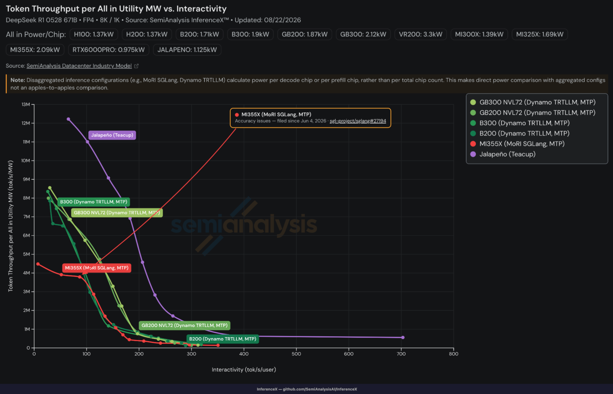

Hot Chipsの最終日に投下されたOpenAIの自社設計ASIC「Jalapeño」に関する情報が、AIハードウェア界隈を騒然とさせている。先日公開されたSemiAnalysisのpodcastでも熱を帯びた議論が交わされていたが、その内容は単なる「自社製チップを作ってみた」という牧歌的なレベルを遥かに超越していた。
今回、最強のLarge Language Model (LLM) を保有するOpenAI自身がBroadcomと手を組み、元TPU開発者たちをかき集めて世に送り出したJalapeñoは、ベンチマークにおいてNVIDIAの次世代アーキテクチャであるVera Rubinすらも脅かす数値を叩き出している。本記事では、このJalapeñoがなぜそれほどまでに革命的なのか、アーキテクチャの妙とAI主導の開発プロセス、そして今後の市場に与える戦略的インパクトを分析する。
TCOと電力効率という現実的な戦場
Jalapeñoの性能を語る上で欠かせないのが、評価軸の転換である。従来のAIチップは、チップ単体あるいはパッケージあたりのFLOPsやスループットで語られることが多かった。しかし、今日のデータセンターにおける最大のボトルネックは「電力」である。資金がいくらあろうと、データセンターのメガワット上限に達すれば、それ以上の計算リソースは物理的に詰め込めない。
OpenAIはJalapeñoの評価において、「Total Cost of Ownership (TCO)」と「メガワットあたりのトークン生成量」という極めて実務的かつシビアな指標を採用した。SemiAnalysisの分析によれば、JalapeñoのTCOはNVIDIAのGB300（Blackwell）はおろか、次世代のRubinすらをも上回るか、少なくとも互角以上の戦いを繰り広げている。

具体的に見てみよう。DeepSeek-V3/R1ベースのアーキテクチャや、1Tパラメータ級のKimi 2.5、そして自社のGPT-OSS 12Bといったモデルを用いたベンチマークにおいて、Jalapeñoは驚異的なPareto曲線を描いている。縦軸にメガワットあたりのトークン生成量、横軸にユーザーあたりのインタラクティビティ（レイテンシ）をとった場合、Jalapeñoは低バッチサイズで高応答性が求められる領域から、高スループットが求められる領域に至るまで、すべてのポイントでNVIDIAを凌駕しているのだ。低バッチサイズ時にはユーザーあたり毎秒700トークンという、競合のピーク値（約350トークン）の倍に達するパフォーマンスを見せつけている。
当然、GB300がHBM3を採用しているのに対し、JalapeñoはSamsung製と目されるHBM4を採用しているという「世代の違い」によるアドバンテージはある。しかし、消費電力（TDP）がRubinの3分の一以下であるにも関わらず、約15.4 TB/sという驚異的なHBM帯域幅を実現している点は特筆に値する。ワットあたりの帯域幅という観点で見れば、Jalapeñoは他のあらゆるチップを絶望的なまでに突き放しているのである。
スペックシートの罠とマイクロアーキテクチャの妙
紙上のスペック（FP4 FLOPsやHBMの容量など）だけを見れば、Jalapeñoは決して派手なチップではない。むしろRubinなどと比較すれば、客観的に見て見劣りする数字が並んでいる。AMDのMI450のように「スペック上はNVIDIAより上だ」と声高に主張するアプローチとは対極にある。では、なぜJalapeñoはこれほどのリアルワールド・パフォーマンスを発揮できるのか。
答えは、データ移動の最小化とプログラミングモデルの洗練にある。多くのTPU系チップやアクセラレータは、巨大なsystolic arrayを採用している。しかしこのアプローチには、いわゆるスキニージェム（細長い行列積）や、奇数サイズのバッチ処理を行う際に、演算器（Processing Elements）を使い切れず効率が著しく低下するという弱点がある。
Jalapeñoは、ソフトウェア管理のスクラッチパッドメモリ（L1キャッシュ）に頼るのではなく、より小さなsystolic arrayを採用し、コア間の同期とウェイトやKVキャッシュの配置を極めてインテリジェントに制御するマイクロアーキテクチャを採用した。これにより、無駄なデータ移動を極限まで削ぎ落とし、紙上のFLOPsを机上の空論で終わらせず、実効性能として100%使い切ることに成功している。
さらに恐ろしいのは、JalapeñoがMulti-Token Prediction (MTP) や speculative decoding といった推論最適化の飛び道具を「あえて使わず」にこの結果を出している点だ。片手を後ろ手に縛った状態のプレーンなデコード処理だけでRubinに勝っているのだから、OpenAIが内部で密かに開発しているであろう高度なspeculative decodingを適用すれば、この差はさらに3倍から5倍へと広がる可能性がある。
ドッグフーディングの極致：AIによるAIチップ設計
そして、当ニュースレターが最も注目すべきと考えるのが、Jalapeñoの開発プロセスの異常な速さである。構想から稼働するシリコンがラボに届くまで2年未満、Register Transfer Level (RTL) のフリーズからテープアウトまでわずか9ヶ月。半導体開発の常識を覆すこのスピードを実現したのは、他でもないOpenAI自身のAIモデルによる設計支援だ。
開発において、AIはRTLの生成や最適化を強力にアシストした。SIMDエリアで8%、行列エンジンエリアで10%の削減をAIの力で成し遂げている。ソフトウェアの領域でも、Tritonベースの低レベルなカーネルプログラミングにおいて、AIがアセンブリコードを大量に生成し、テストし、最適化するという反復プロセスを人間には不可能な速度で回し続けた。
SemiAnalysisのpodcastでも言及されていたが、OpenAIのエンジニアが提示した3万行にも及ぶカーネルコードは、人間の目には解読不能な「AIが吐き出した最適化の結晶」であったという。人間がハードウェアの複雑なデータ移動を深く推論しなくても、AIが勝手に環境を探索し、正解を導き出す。これこそが強化学習の真骨頂である。
皮肉なことに、このJalapeñoの設計・最適化を行うためのAIモデルは、NVIDIAのGPUクラスター上でトレーニングされている。NVIDIAのハードウェアを使ってトレーニングされた最高峰のAIモデルが、NVIDIAの首を絞めるためのハードウェアを最速で設計しているのだ。
CUDAの堀は枯渇するか？
これまで、AnthropicやGoogleなどは、NVIDIAのGPU以外（TPUやTrainiumなど）でもトップクラスのモデルをトレーニングできることを証明してきた。しかし、推論エコシステムにおける「CUDA moat」は依然として強固だと思われていた。
しかし、Jalapeñoの登場は、ソフトウェアの進化とAI自身による最適化能力が、特定のハードウェアへの依存度を劇的に引き下げつつあることを示している。OpenAIは、自社の最新モデル（Astraなど）を世界中の誰よりも早く、独占的に自社のインフラ設計に投入できる。これは、単なるファブレス半導体企業には絶対に真似のできない、圧倒的な非対称性を持つ競争優位である。
Anthropicもこの潮流を察知し、自社のシリコンチームを立ち上げて追随しようとしている。AIモデルの進化がハードウェアの進化を加速させ、そのハードウェアがさらに強力なAIを生み出す。この自己強化ループに入った少数のフロンティアAIラボだけが、今後のインフラ競争を生き残るのだろう。
NVIDIAのJensen CEOは、こうした自社開発チップの動きに対して「気にしていない」という態度を崩していない。確かに、エコシステム全体をカバーするNVIDIAの包括的なビジネスモデルが明日すぐに崩壊するわけではない。しかし、巨額のインフラ投資を行う最大顧客たちが、AIの力を借りて自前で圧倒的に効率的なASICを設計し、しかもそれが実用レベルでNVIDIAの最新モデルを凌駕しているという現実は重い。
今回のJalapeñoが示すのはハードウェア開発の民主化というよりは、最強のAIを持つ者だけが最強のハードウェアを手にできるという、新たな寡占の始まりかもしれない。
出典・参考: